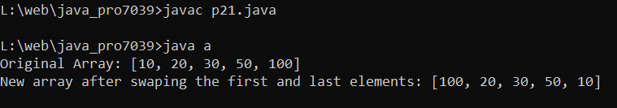

Write a Java program to swap the first and last elements of an array and create a new array.
Code:-
import java.util.Arrays;
class a {
public static void main(String[] k)
{
int[] arr = {10, 20, 30,50,100};
System.out.println("Original Array: "+Arrays.toString(arr));
int x = arr[0];
arr[0] = arr[arr.length-1];
arr[arr.length-1] = x;
System.out.println("New array after swaping the first and last elements: "+Arrays.toString(arr));
}
}
Output:-

import java.util.Arrays; class a { public static void main(String[] k) { int[] arr = {10, 20, 30,50,100}; System.out.println("Original Array: "+Arrays.toString(arr)); int x = arr[0]; arr[0] = arr[arr.length-1]; arr[arr.length-1] = x; System.out.println("New array after swaping the first and last elements: "+Arrays.toString(arr)); } }